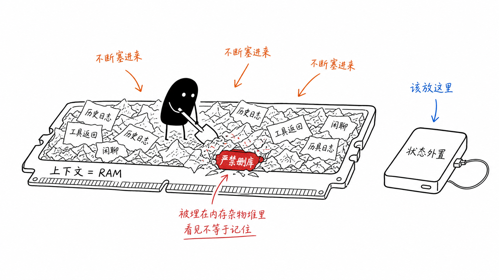
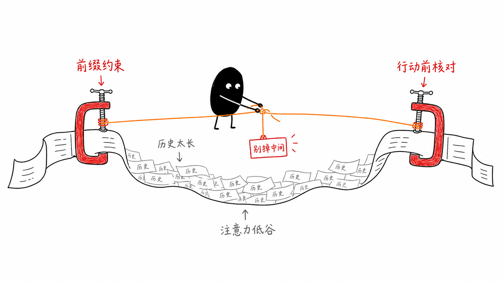
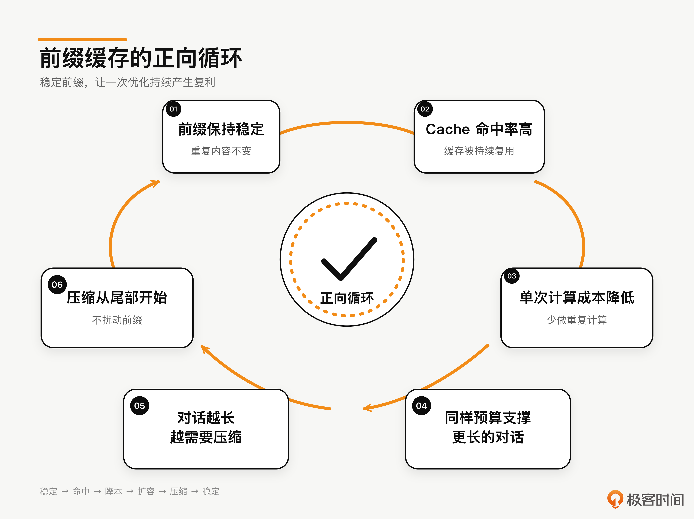
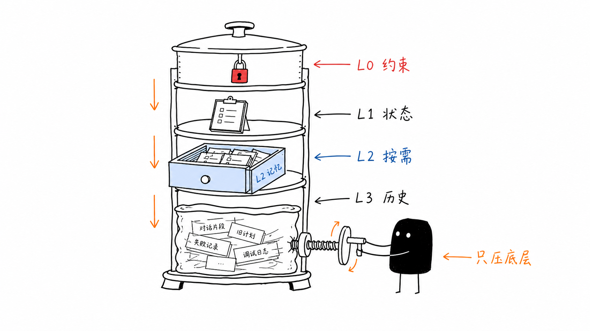

05｜为什么窗口越大，Agent 越容易忽略最重要的指令？
你好，我是李号双。
我们先来看一段代码。是不是有点熟悉？很多人写出的人生第一段 Agent 代码，大概率就长这样。我自己最早也是这么写的：
这段代码没什么花哨的。一个 messages 列表，System Prompt 写好约束，用户输入塞进去，然后循环调用模型、执行工具、把结果 append 回去。教程里这么教，开源项目里这么写，逻辑上挑不出毛病。
但是它隐含了一个所有人都会有的直觉假设：只要信息在上下文里，模型就会看到，就会遵守。 System Prompt 写了“严禁删库”，它就永远有效；历史对话 append 进去了，模型就永远记得。
这个假设，是所有 Agent 灾难的起点。
跑短任务的时候，这个假设一般不会出问题。前几轮，非常完美，工具调用顺滑，回答精准，你甚至觉得这就够了，可以上线了。
但当你把它丢到生产环境，让它跑一个长一点的任务，20 轮、30 轮工具调用之后，诡异的事情就开始了。不是报错崩掉那种，是更隐蔽的：
Agent 突然调了一条
DROP TABLE users;，你翻到上下文最顶端，System Prompt 里“严禁执行删库操作”那行字明明还在，没被截断，没被覆盖，就在那里——但模型就像没看见一样。或者，一个
list_all_logs工具返回了 8 MB 的 JSON。 之后每一轮，模型都拖着这 8 MB 上下文继续推理。token 消耗涨了 40 倍，任务进度纹丝不动——模型陷在海量日志里来回翻找，出不来。你盯着日志，明明所有信息都还在上下文里，为什么模型就是“不看”？
你说，问题出在哪儿呢？
上下文窗口不是硬盘，它是内存
显而易见，问题出在你把上下文窗口当成了硬盘，但它其实是内存（RAM），这是很多程序员都会掉入的陷阱。

硬盘的特点是：容量大、持久化、随机访问成本均匀——你存进去的 1GB 文件，第 1 个字节和第 999 MB 处的字节，读取速度一样快。
内存完全不同：容量有限，断电即失，而且访问不同位置的代价天差地别——CPU 缓存命中和缓存未命中的性能差距可以达到两个数量级。
这就好比你开了三小时的会，记住了第一个发言的人说了什么，也记住了最后谁做的总结。中间两小时所有人说了啥，全糊了。这不是你偷懒——这是人脑的物理限制。
Transformer 的注意力机制，一模一样。虽然数学上允许每个 token “看到”所有其他 token，但注意力权重不是均匀分配的。2024 年，斯坦福大学那篇论文 Lost in the Middle: How Language Models Use Long Contexts 揭示了一个事实：
模型对上下文首尾两端的信息注意力权重最高，对中间段的信息注意力权重显著衰减——无论中间段写了什么。
这意味着你在 System Prompt 里写的“严禁删库”，一旦被 10 万 token 的工具返回和历史对话推到了上下文的“中间位置”，它在模型的注意力分布里就等于不存在。
模型不是“忘记”了这条指令，而是注意力的物理机制让它“看不见”。“在” 和 “被看见”，是两码事。
而且随着上下文越来越长，这个问题会指数级恶化。你以为窗口越大越安全，实际上窗口越大，核心约束被淹没的概率越高。这就是为什么窗口越大，Agent 越容易忽略最重要的指令。 这不是 bug，是物理。
所以，上下文管理不是“无脑附加（append）历史对话”那么简单。接下来我们一层一层拆：先做预算分层，再讲 L0-L3 具体如何划分。
注意力预算分层：上下文不是一锅汤
计算机体系结构几十年前就解决了一个本质相同的问题：CPU 和主存之间速度差了几个数量级，怎么填平这个鸿沟？
答案是多级缓存——L1/L2/L3，越靠近 CPU 的层级容量越小、速度越快、优先级越高，越远的层级容量越大、速度越慢、可被换出。
上下文管理面对的是一模一样的问题：窗口有限（容量约束），注意力不均匀（访问代价不均），核心约束不能丢（一致性要求）。解法也一样——分层预算制。
我们给上下文划分 L0–L3 四个层级，每个层级有不同的优先级、生命周期和预算占比，你可以参考我整理的表格：
注意这个 L0-L3 分层是预算优先级，不是物理摆放顺序。底层逻辑只有一句话：系统指令永远比历史日志重要，当前状态永远比过往闲聊重要。你比模型更清楚什么不能丢，所以这件事必须写进代码，不能指望模型自己判断。
L0：刹车片不能丢
L0 是你的刹车片。占整个上下文预算的 8%，不大，但绝对不能被挤掉。它装的是系统指令、核心约束、项目宪法——那些“丢了就会出事”的东西。L0 一旦被挤出上下文，刹车就失灵，Agent 就会越权、删库、跑飞。不是可能，是迟早。那怎么保证它不被挤掉呢？
宪法层独立成文件
Claude Code 的 CLAUDE.md 就是这么干的——核心约束不写在代码字符串里，而是放在一个独立文件里。开发者随时改，不用动代码不用重新部署。Agent 启动时读这个文件，注入 L0。
我第一次看到这个设计的时候愣了一下——这不就是把宪法和代码解耦吗？但仔细想想，这帮人是真的想清楚了：宪法是人机共治的接口，它本来就该人来管，不该焊死在代码里。
这里有一个关键设计决策：宪法层永远在上下文的最前缀位置，且内容极少变动。这不是随意的选择，是为了 Prompt Cache 的缓存命中率——前缀越稳定，缓存命中率越高，推理成本越低。这个后面会闭环讲到。
首尾三明治：对抗 Lost in the Middle
即使有了分层，Agent 在超长任务中依然会“忘事”。因为 Transformer 的注意力机制存在 Lost in the Middle 效应——L0 约束一旦被 L2/L3 的海量信息推到“中间位置”，它就等于不存在。答案是：让约束始终处于模型注意力的绝对高位（首部或尾部）。
L0 本身已经保证系统指令永不压缩、永远待在上下文最前缀——这是头部高地。但光有头部还不够，随着 L3 历史不断膨胀，头部约束离当前生成位置越来越远。解法是在上下文末尾再追加一份约束提醒（constraint reminder），形成首尾三明治防御。
这个设计的精妙之处在于：无论中间的业务区怎么膨胀、怎么压缩，首尾两个“高地”永远钉在注意力的最高权重区域。模型在生成下一个 token 之前，注意力一定会扫过尾部——就像考试前老师最后说一句“记得写名字”。你前面可能走神了，但最后这句话你一定可以听到。

L1：别把状态塞在上下文里
L1 承载当前执行状态、进度计划、轮次计数等动态但高频访问的信息。优先级仅次于 L0，生命周期是“任务期内常驻”，预算占比 15%，同样不可压缩。
这里有一个容易踩的坑：把执行状态塞在上下文里。
Agent 的执行状态——跑了多少轮、花了多少 token、当前卡在哪一步，绝对不能只存在 messages 列表里。上下文是 RAM，前面说过，断电即失。进程崩了、OOM 了、API 限流了，上下文里的状态全没了。
还记得第 1 讲宪法四“持久化可恢复”吗？它的落地形态就是 AgentRun 对象，所有关键状态集中在外部存储里，上下文只是它在当前 token 窗口的一张快照。快照可以丢，源头不会丢。
L1 层的核心逻辑是：每轮推理前，从外部的 AgentRun 对象或数据库中读取最新的执行状态，组装成一个状态块；然后在组装上下文时，找到 L1 的位置，用这个最新的状态块替换原有内容，而不是盲目追加。这样即使上下文被压缩，L1 也不会丢失。
一句话记住 L1：每轮重新组装，从外部存储读取，而不是让模型“记住”当前状态。
L2：缺页了就去 SSD 取
L2 承载长尾知识、用户历史偏好、相关文档片段等按需注入的信息。优先级中等，预算占比 35%——但注意，这是“预算上限”，不是“常驻预算”。
生产环境中，L2 是按需检索注入的片段，单次注入的 Token 量通常只有 2K-5K。留 35% 的空间，是为了应对复杂任务中可能需要同时注入多个相关文档片段（比如代码审查时同时引用多个文件），而不是让你填满它。
RAG 就是缺页中断
操作系统几十年前就用同样的方式解决了同样的问题：虚拟内存的缺页中断机制（Page Fault）。程序以为自己独占全部内存，实际上只有正在用的那一页才真正在物理内存里——用到时调入，不用时换出。
把知识库当 SSD，把上下文当 RAM，缺页了就去 SSD 取。
长尾知识、用户历史偏好，不该预先塞进 System Prompt。用 RAG 在每轮推理前，根据当前意图检索最相关的 Top-K 片段，注入 L2 层，用完即焚，下一轮重新检索。
副车道检索：不污染主对话前缀
这里有一个容易被忽视的工程细节。当一个 Agent 需要检索记忆时，它不应该在主对话流里做 RAG，而应该启动一个独立的、用便宜模型完成的检索调用——这被称为副车道（sidecar）机制：
独立召回的核心价值不是“省钱”，而是不污染主对话的 Prompt Cache 前缀。如果在主对话里做 RAG，每次检索的结果都会改变上下文结构，导致 Prompt Cache 失效。把检索结果放在前缀之后（或通过副车道独立获取），前缀结构保持稳定，Cache 才能持续命中。这一点后面讲压缩时会形成闭环。
L3：五级渐进压缩，从保真到保命
L3 承载历史对话、工具返回日志等可压缩轮转的信息。优先级最低，预算占比高达 42-60%，是整个上下文的“预算黑洞”。
为什么 L3 是黑洞？一次数据库查询可能返回 5000 token 的 JSON，但 Agent 真正需要的可能只是其中一行。不做压缩，几轮工具调用下来，上下文就爆了。
分区隔离：系统指令与历史日志分治
系统指令（L0）和工具返回（L3）混在同一个 messages 列表里，是架构上的问题。生产级 Agent 必须做分区管理，在代码层级隔离，不让历史日志有机会挤掉系统指令。
搬家式的断舍离：五级渐进压缩
随着会话轮次不断增加和工具反复调用，L3 层会像滚雪球一样越积越大，逼近甚至撑爆分配的 token 预算。简单的截断会丢失关键决策线索，一刀切的摘要可能把重要约束抹平。我们需要一种更精细的压缩机制来动态挤出“水分”。生产级 Agent 的压缩不是一刀切，而是五个逐级升级的层级。每一级对应不同的上下文压力，从“尽量保真”到“只保命”：
为什么是五级而不是三级？因为三级压缩的粒度太粗——从“最近 N 轮原文”直接跳到“全部摘要”，中间没有过渡。五级压缩让每一级只做最小的必要牺牲，最大限度保留有用信息。
这里最容易被忽视的是 Level 2 的工具结果压缩。我个人觉得这是五级里最被低估的一级。很多人一上来就 Level 3 做摘要，其实 Level 2 砍一刀能省 40% 的 token，信息损失几乎可以忽略。一次数据库查询返回 5000 token 的 JSON，生产级做法是：保留结果的结构（首部字段名 + 尾部状态码），中间部分用 LLM 生成一句话摘要。5000 token 压缩到 700 token，关键信息一个没丢。这个级别的压缩性价比高得离谱。
另外一个做法是工具返回的结果如果超过阈值（比如 2000 字符）就写盘，上下文中只留一个约 800 字符的 placeholder 和文件路径。模型需要看全文时用 read_tool_result 工具按需读回。这样大块内容根本不进压缩管线，L3 的体量天然就小。
压缩的黄金法则
永远从 L3 开始压缩，L0 和 L1 是禁区。
如果压缩把“严禁删库”给摘要没了，那压缩就是灾难。这也决定了压缩的方向，从 L3 最老的历史开始压缩，保留最近的对话原文。最老的系统指令（L0）和最近几轮的决策（L3 尾部）都不能动，动的只有中间那堆“过去式”的工具日志。
这就引出了一个正反馈循环：
前缀稳定 → Cache 命中率高 → 每次请求的计算成本降低 → 同样的预算支撑更长的对话 → 对话越长越需要压缩 → 压缩从尾部开始 → 前缀保持稳定。

把所有东西焊进代码
把上面说的四层分层、五级压缩、首尾三明治焊进代码，一个生产级上下文管理器长这样。先是两个枚举——层级和压缩级别：
然后是上下文管理器本身。核心是 prepare()——每轮 LLM 调用前执行一次，组装出完整的消息列表：
看到 _assemble_sandwich 最后那个 self._reminder 了吗？这就是尾部三明治。不管前面 L3 的历史被压成什么样，这一行永远在上下文最末尾——模型生成下一个 token 之前，注意力一定会扫过它。
压缩管线是五个 stage 组成的列表，每个 stage 自己判断该不该出手，第一个命中的生效：
总结
回到开头那个场景：System Prompt 里“严禁删库”那行字明明还在，模型却像没看见一样调了 DROP TABLE。
现在你能回答为什么窗口越大，Agent 越容易忽略最重要的指令了吧？大模型的注意力不是均匀的，窗口越大，核心约束被历史推到中间位置的概率越高，Lost in the Middle 让它“在”却不“被看见”。你以为信息都在窗口里，但注意力的物理机制不这么认为。
这节课给的解法是一套组合拳：L0-L3 分层把“什么不能丢”写进预算、首尾三明治把约束钉在注意力高地、L1 状态外置让快照可丢源头不丢、L3 五级压缩从尾部动手绝不碰禁区、副车道检索保住 Cache 前缀。

这几件事不是各自为战，它们拼在一起形成了一个正反馈——前缀稳定 → Cache 命中 → 成本下降 → 同样预算撑更长对话 → 越长越要压缩 → 从尾部压 → 前缀继续稳定。
你要记住：上下文是 RAM 不是硬盘，RAM 的管理从来不能交给概率。
思考题
这节课我们讲了 L0-L3 四层分层架构和五级渐进压缩。假设你的 Agent 面临这样一个场景：
用户要求 Agent 执行一个需要 50 轮工具调用的复杂任务，比如“审查整个代码仓库并修复所有安全问题”。在第 30 轮时，上下文已经达到 85%（触发 Level 4 主题级摘要）。但此时用户突然说了一句话：
“对了，第 5 轮查到的那条 SQL 注入漏洞，修复时不要用参数化查询，用 ORM 的查询构建器替代。”
这是一个跨 25 轮的临时性约束。在 Level 4 压缩下，第 5 轮的工具返回早已被压缩成主题摘要，具体的 SQL 注入漏洞细节可能已经丢失。
你如何在 Agent Loop 层面设计一种机制，确保这类“用户临时性约束”不会被渐进压缩吞掉？提示：考虑约束的“生命周期管理”——临时约束从哪里来、存在哪里、何时注入、何时销毁。
欢迎你把你的想法分享到留言区，如果你觉得这节课的内容对你有所帮助，欢迎你分享给需要的朋友，我们下节课再见！
附录：用 ProdAgent 验证本讲机制
课程中的 ContextManager 是为了讲清原理而简化的教学实现。它展示了 L0-L3 分层、首尾约束、状态外置和渐进压缩的核心结构，但没有展开一套完整框架还需要处理的记忆管理、运行预算、多 Agent 协作、事件观测和持久化等工程问题。
如果你想继续验证这些机制，而不是只停留在示例代码层面，可以使用我们提供的开源框架 ProdAgent。它把本讲涉及的上下文分层、记忆召回、工具结果压缩和运行时观测实现成了可运行模块。
下面两个案例不是性能基准，而是可重复运行的验证场景。你可以直接运行代码，观察记忆是否召回、上下文如何组装，以及压缩级别何时切换。
案例一：Agent 相亲——验证机械截断与框架化管理的差别
这个案例让两个 Agent 在同一个共享对话中自主交流。
角色：相亲男 - 大牛、相亲女 - 小美
大牛代表常见的简单实现：自己维护一个 messages 列表，超过阈值后执行 del messages[:-4]，直接删除较早的消息。因此，小美在第一轮说过的“海鲜过敏”等信息，会随着对话增长从大牛的上下文中彻底消失。
小美则运行在 ProdAgent 框架上：
MemoryManager管理需要持续保留和召回的信息；上下文按照不同优先级分层组装；
历史对话与工具结果进入压缩管线；
MEMORY_RECALL、CONTEXT_BUILD等 Hook 会输出运行时信号；多 Agent 通过共享对话空间进行轮次驱动，并受到预算和终止条件约束。
运行案例时，不要只看最终对话。真正需要观察的是气泡下方的“命中记忆”“触发压缩”和“压缩后仍保留”等信号。这些才是框架机制真实执行的证据。
https://github.com/limenagent/prodagent/blob/main/examples/deep_research.py
案例二：深度研究——验证长任务中的上下文压缩
深度研究是验证上下文管理的典型任务：Agent 需要连续抓取多个来源，每轮工具返回都可能包含几千字内容。如果简单保留全部历史，L3 很快会被工具结果填满；如果只保留最近几轮，又可能丢失研究早期查到的关键数字和来源。
ProdAgent 的 deep_research 示例采用 REACTIVE 模式，每轮根据上一次搜索结果决定下一步，而不是预先写死整条执行路径。
为了让压缩机制更容易被观察，示例主动缩小上下文窗口并调低触发阈值。运行过程中可以看到：
TOOL_COMPRESS先压缩过长的工具返回；HISTORY_SUMMARY再汇总较早的研究历史；最终报告仍然能够使用前面轮次保存下来的关键 claim 和来源；
控制台会显示上下文压力与压缩级别的变化。
这个案例验证的重点不是“报告写得有多好”，而是一个长任务在不断产生工具结果时，框架能否按照预定策略管理上下文，并保留最终输出真正需要的信息。
https://github.com/limenagent/prodagent/blob/main/examples/deep_research.py